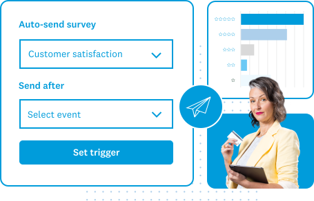


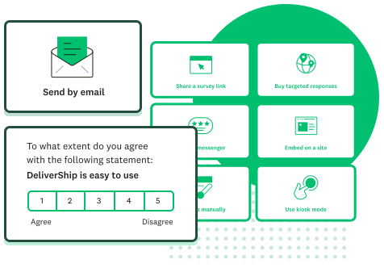

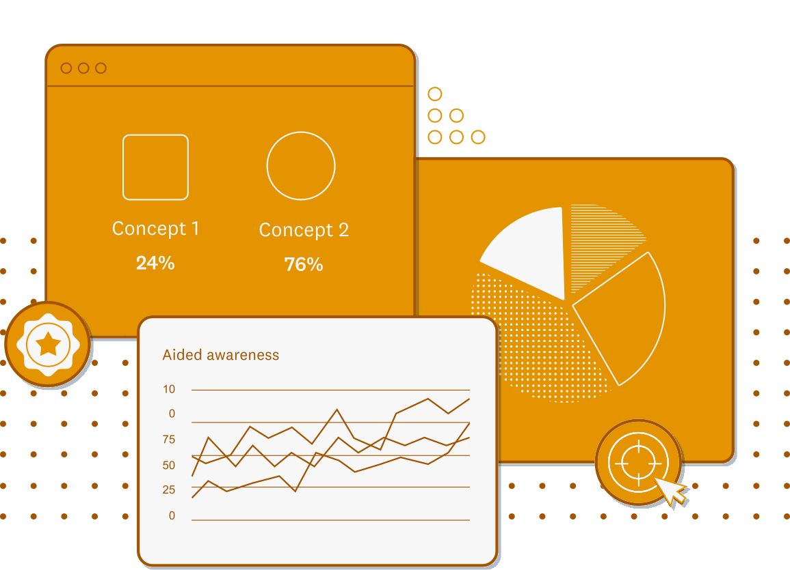
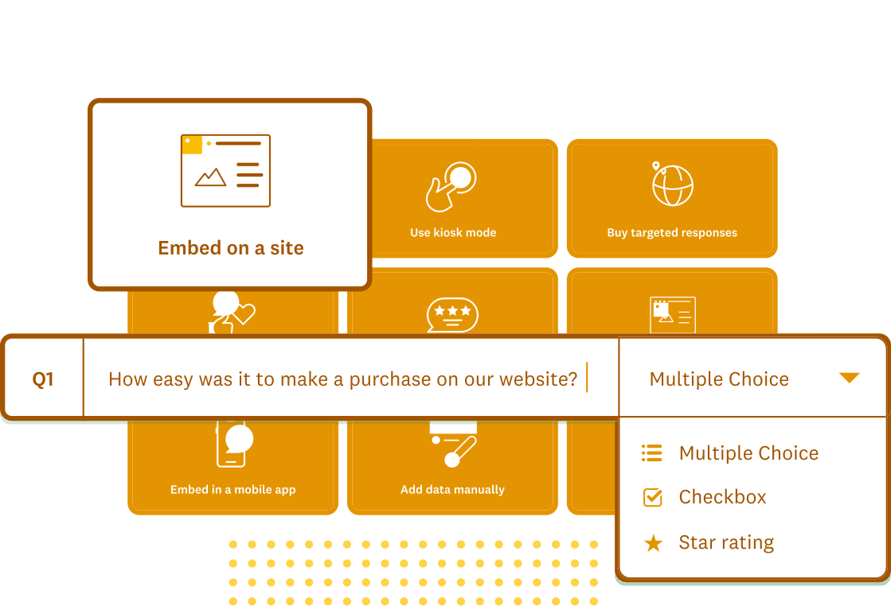


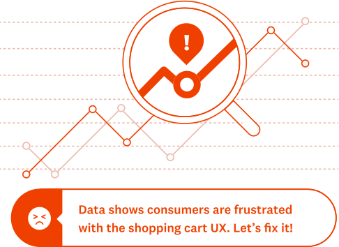

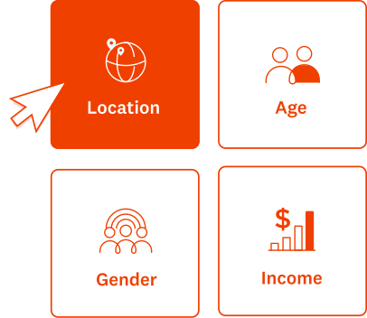
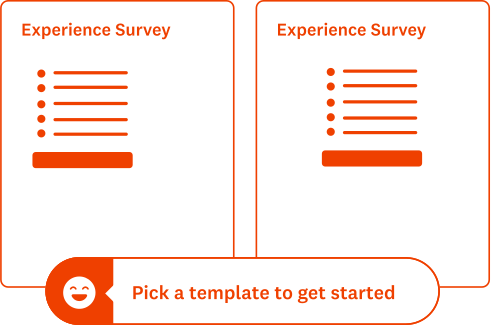
Touching key pages of the world's best survey platform presented an opportunity for improvement coupled with a handful of technical constraints.
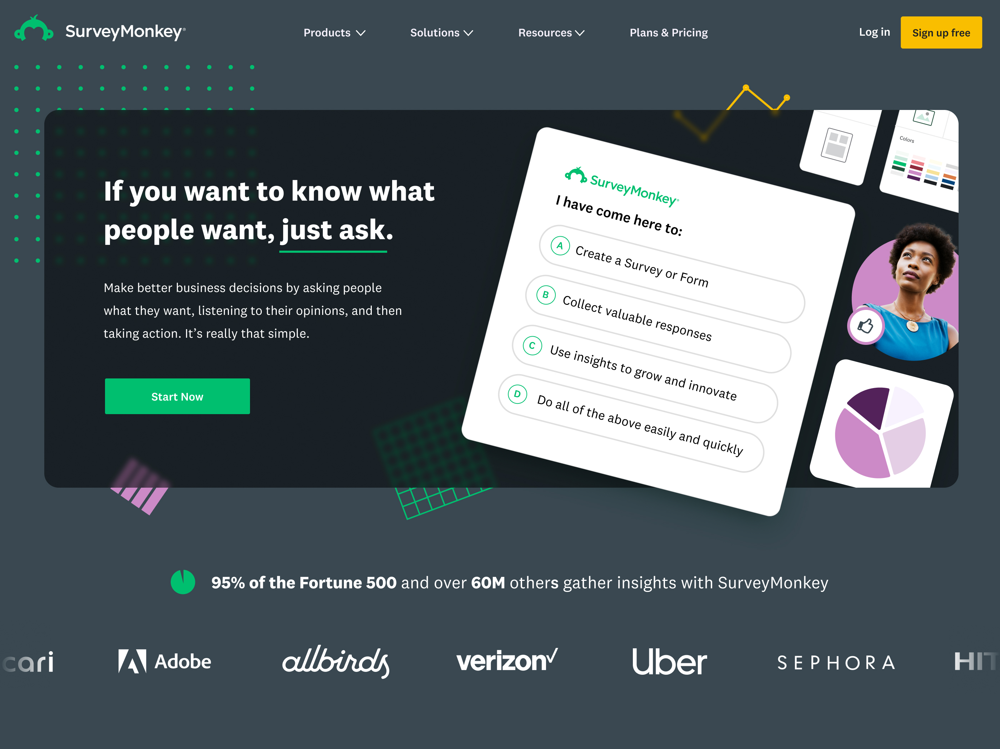
New Homepage
With the homepage update I wanted to inject some personality into the brand, something that could be improved upon and resonate alongside the playful name. After concpeting a hadful of directions one stood out to me. It involved a bit of subtle interactivity that would showcase the product and value proposition at the same time.
It revolved around embedding a mock survey in the hero area. Each multiple choice option would be a core user intention (the final answer being all of the above). Every selection would result in a form response detailing the associated value proposition and each answer would laterally lead to the other value propositions and inevitably end at the 'All the above' result with a sign up form.
By skewing the axis of the form and surrounded it with graphics, it was emphasized as a visual element rather than an actual working survey making it a bit of an easter egg. To stay playful and define a visual style I incorporated animated patterns in the background that would move and rotate organically. As they passed under the hero module I would use an svg filter to blur them to maintain legibility.
Brand Refresh
SurveyMonkey was in the midst of a leadership change and brand reorganization. They spent the past few years building distinct business units for their consumer, enterprise and data products under the umbrella brand, Momentive, but the new direction involved consolidating the brands back into the singlular SurveyMonkey entity.
To recognize the re-org, it was necessary to launch an updates to key pages to reflect the change. It was an opportunity to change the creative that had not been updated for some time.
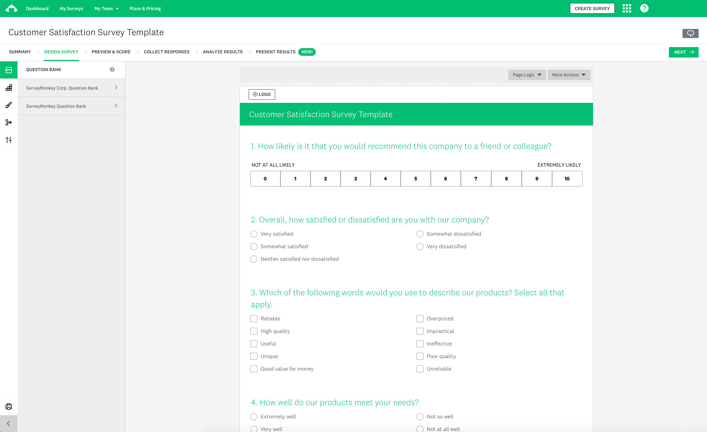
A Product Design Gap
The core direction of the visual design was to incorporate more UI graphics to reinforce feature propostion, problem being that the presentability of product shots was lacking. The brand design team were designing UI mock-ups specifically for marketing use only. This felt necessary, but disingenuous seeing that they lacked parity with the design of the in-use product. Product shots were being incorporated as core visuals without any additional flourish which made it feel dry.
Instead using the UI components as secondary imagery seemed to work well and bred a visual style, something that was lacking from the existing site. I opted for a line driven style incorporating the range of brand colors. Photographic imagery would be used a visual anchor
Landing Pages
There were dozens of landing pages and side doors funneled through paid search. All of these would also need updated content and imagery for a unified launch.
The core direction of the visual design was to incorporate more UI graphics to reinforce feature propostion, problem being that the presentability of product shots was lacking. The brand design team was designing UI mock-ups specifically for marketing use, lacking parity with the in use product. This felt disingenuous. Additionally these product shots were being incorporated as core visuals without any accompanying graphics which also felt dry.
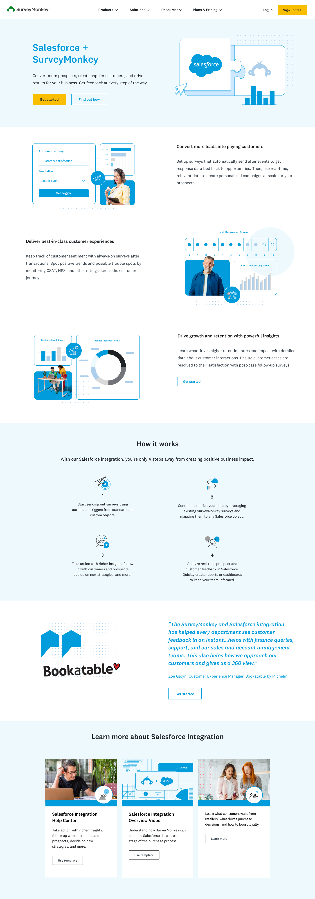
Workin' with what you got
Attempts at incoporating new creative
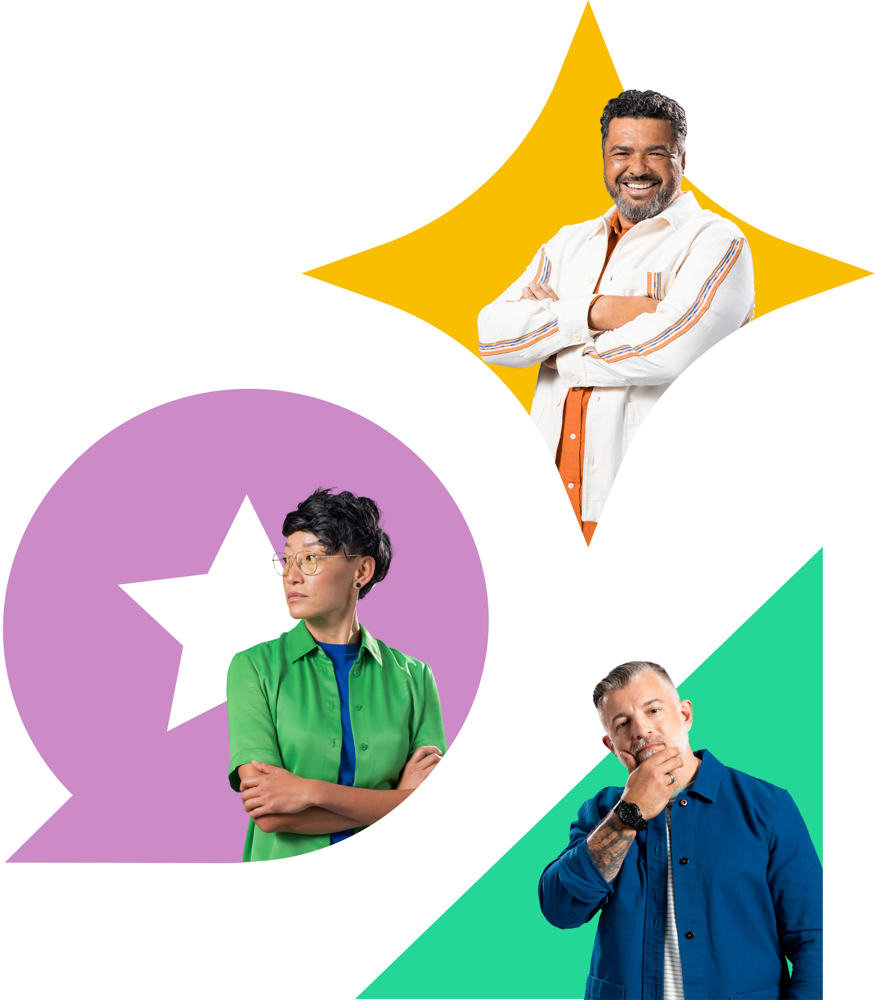
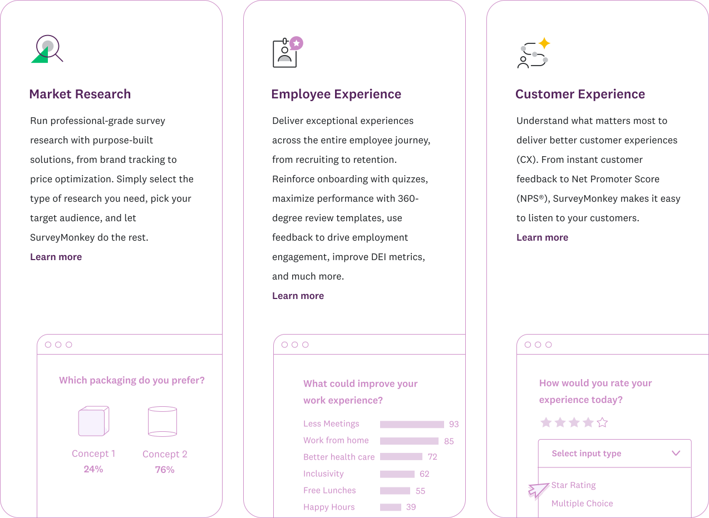






